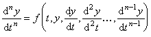

Title Page
Contents
1. Introduction
2. Key Idea
3. Root finding in one dimension
4. Linear equations
5. Numerical integration
6. First order ordinary differential equations
7. Higher order ordinary differential equations
8. Partial differential equations
The discussion so far has been for first order ordinary differential equations. All the methods given may be applied to higher ordinary differential equations, provided it is possible to write an explicit expression for the highest order derivative and the system has a complete set of initial conditions. Consider some equation
 , | (96) |
where at t = t0 we know the values of y, dy/dt, d2y/dt2, …, dn1y/dtn1. By writing x0=y, x1=dy/dt, x2=d2y/dt2, …, xn-1=dn-1y/dtn-1, we may express this as the system of equations
| (97) |
and use the standard methods for updating each xi for some tn+1 before proceeding to the next time step. A decision needs to be made as to whether the values of xi for tn or tn+1 are to be used on the right hand side of the equation for xn-1'. This decision may affect the order and convergence of the method. Detailed analysis may be undertaken in a manner similar to that for the first order ordinary differential equations.
For second (and higher) order odes, two (or more) initial/boundary conditions are required. If these two conditions do not correspond to the same point in time/space, then the simple extension of the first order methods outlined in section 7.1 can not be applied without modification. There are two relatively simple approaches to solve such equations.
Suppose we are solving a second order equation of the form y" = f(t,y,y') subject to y(0) = c0 and y(1) = c1. With the shooting method we apply the y(0)=c0 boundary condition and make some guess that y'(0) = a0. This gives us two initial conditions so that we may apply the simple time-stepping methods already discussed in section7.1 . The calculation proceeds until we have a value for y(1). If this does not satisfy y(1) = c1 to some acceptable tolerance, we revise our guess for y'(0) to some value a1, say, and repeat the time integration to obtain an new value for y(1). This process continues until we hit y(1)=c1 to the acceptable tolerance. The number of iterations which will need to be made in order to achieve an acceptable tolerance will depend on how good the refinement algorithm for a is. We may use the root finding methods discussed in section 3 to undertake this refinement.
The same approach can be applied to higher order ordinary differential equations. For a system of order n with m boundary conditions at t = t0 and n-m boundary conditions at t = t1, we will require guesses for n-m initial conditions. The computational cost of refining these n-m guesses will rapidly become large as the dimensions of the space increase.
The alternative is to rewrite the equations using a finite difference approximation with step size Dt = (t1-t0)/N to produce a system of N+1 simultaneous equations. Consider the second order linear system
| (98) |
with boundary conditions y(t0) = a and y'(t1) = b. If we use the central difference approximations
| (99a) | |
| ( 99 b) |
we can write the system as
| (100) | |
Higher order linear equations may be catered for in a similar manner and the matrix representing the system of equations will remain banded, but not as sparse as tridiagonal. The solution may be undertaken using the modified LU decomposition introduced in section4.4 .
Nonlinear equations may also be solved using this approach, but will require an iterative solution of the resulting matrix system Ax = b as the matrix A will be a function of x. In most circumstances this is most efficiently achieved through a Newton-Raphson algorithm, similar in principle to that introduced in section 3.4 but where a system of linear equations requires solution for each iteration.
Start of this section
Title Page
Contents